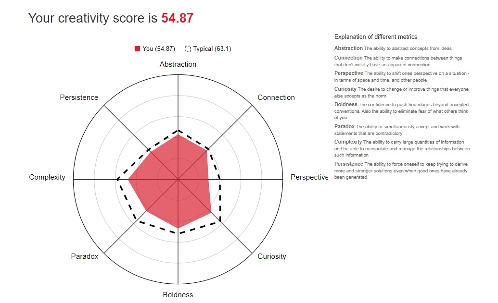

I completed the test at TestMyCreativity4
These were my results:

Image of Radar Graph Results for Kylie Davies obtained from Test My Creativity 18/6/20204
I tested as slightly less creative than average which I found surprising (and a bit disappointing). I did complete this test late at night last Wednesday; maybe the results reflect how flagged I felt.